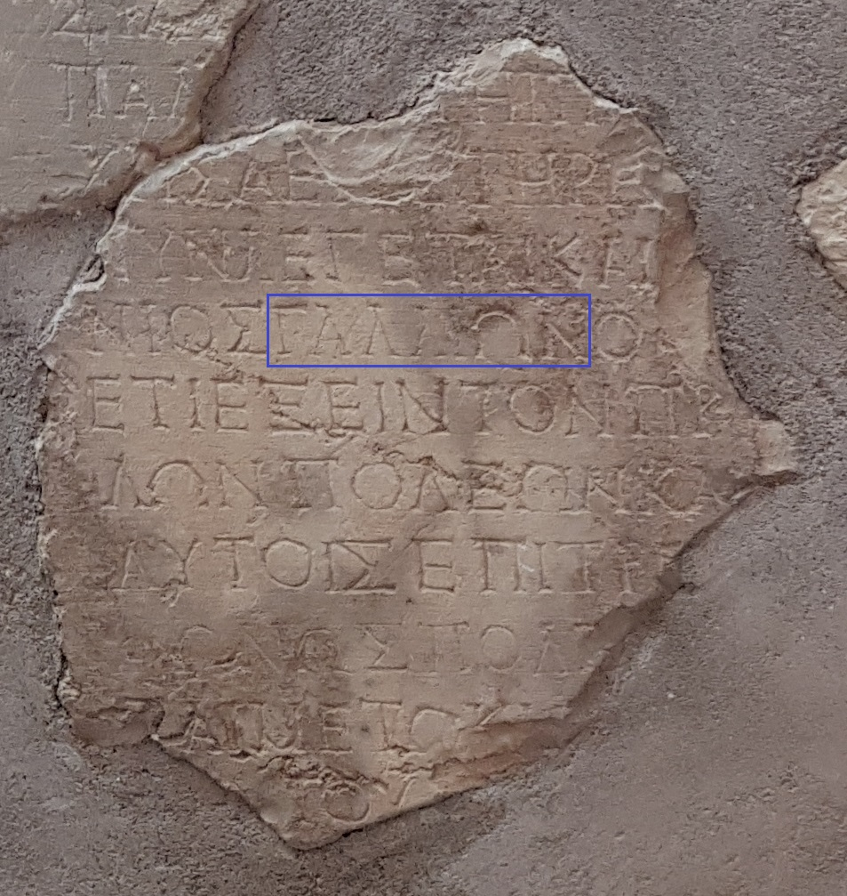

Gallio Inscription

Nine fragments of a letter from Emperor Claudius mentioning Gallio as proconsul of Achaia, reassembled from excavations at Delphi. Because Claudius's reign dates the letter, Gallio's proconsulship can be fixed to about AD 51-52.
Biblical Significance
Acts 18 places Paul before Gallio in Corinth during an eighteen-month stay, so the inscription gives one of the firmest dates in Paul's life and helps anchor the whole chronology of Acts. It is a quiet encouragement that Luke wrote careful, checkable history.
Interpretations
Scholars agree the Delphi inscription names Gallio as proconsul of Achaia in AD 51–52, anchoring the date of Paul’s Corinthian ministry in Acts 18.
Scripture Illuminated
Awaiting Review Not yet checked against scholarly sources. Treat its claims as provisional until this entry is reviewed. About verification
Last reviewed: not yet reviewed